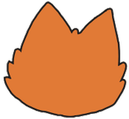
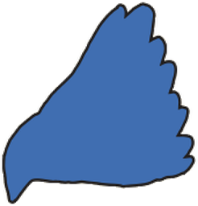
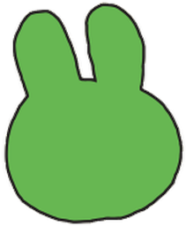

From the Steam trays: frame in the faction colour, square slate tiles, one big square on the right. Here the square holds the turn actions, an ink line parts it from the phase actions, and card actions fold into a panel above. Existing paper kit, icons from react-icons only.
A · Dock Marquise · daylight
Daylight2/3
End phase
Big square = turn actions: End phase, Undo, Spend bird, same tiles on the same grid; ink line parts them from the phase actions
Cards tab opens a panel upward with crafted-card actions (click it); collapsed = tab + count
Panel shown at its worst case: all 8 card actions held by one seat. About 3 rows tall, the rest scrolls; it opens on the first action of the current phase
Phase tag on the right; rows of another phase are faded
Line lights up on hover only (cream + gold ring), not on click or hold. Click = start the action. Hold a line (350 ms) = its crafted card shows until release, as holding a hand card does (try it; Propaganda Bureau is shown held)
No labels: name on hover
Spent action stays in place, faded (Recruit)
Gold ring = action being staged
B · Whole turn Alliance · evening
Evening2/3
End phase
Every action of the faction's turn has a fixed tile; other phases are faded, as in the Steam Alliance tray
Tiles never move, so position is learned once
Costs more: needs a per-faction action list on the client
13 · Eyrie decree in the tray
From the Steam Eyrie tray: the four decree columns are the tray. A medallion per column, its cards as suit marks on the strip below, resolved ones greyed.
C · Decree columns Eyrie · daylight · chosen
Daylight2/6
Gold ring = column the decree is resolving now; click its medallion to act
Remaining cards visible at a glance, no faction board trip
Turmoil risk readable: a card nobody can resolve stays lit
D · Decree as tiles smaller change
Daylight2/6
Same component as A: one tile per unresolved decree card, suit pinned on the corner (today's badge)
Later columns shown faded, so the order of the decree reads left to right
No new layout code, loses the column picture
15 · Tray for every faction
Layout A for all, decree columns (C) for the Eyrie. One dock per phase: phase actions, ink line, turn actions (End phase, Undo, then Draw or Spend bird when legal). Only what is legal now is shown; a spent action stays faded.
Dashed gold = action has no entry in actionIcons.ts yet; icon shown is a proposal
Non-Lucide icons are the real react-icons glyphs: FaBed rest, GiTorch explore, GiRobber steal, TfiReload convert, MdPlusOne Lizard score, TbHexagonalPyramidPlus sanctify, FaRegDizzy turmoil, GiCardDiscard discard
Vagabond: pill on top of each action = ready items / items of the kind it exhausts (Move 2/3 = two of three boots ready); 0 left fades the tile
Vagabond quests and item moves stay on the faction board (board-only today)
Forced prompts (ambush, field hospitals, Eyrie Émigré) stay on banner / hand, never in the tray
Cards tab only appears when the seat holds a crafted card with an action
14 · Side column, minimal change (dropped)
Tray stays where it is today (right 20% column). Only the skin changes: faction frame, slate tiles in place of the wooden medallions, labels kept.
E · Frame + tiles labels kept
Daylight2/3
March
Build
Recruit
Battle
Overwork
End phase
Class constants only in ActionTray.tsx, plus the faction colour on the sheet
Keeps the labels new players need
F · Frame + tiles + slot no labels
Evening2/3
End phase
Dock A folded into the side column: cards panel on top, four tiles a row, line, turn actions
No labels: name on hover
Icon source
Left: new slate tile, icon from react-icons (the actionIcons.ts map, unchanged)
Right: today's wooden medallion, same icon
No reference art in the tray; suit marks stay (game data, already in use)
14 · In context, 1280 × 720
Shown at half size. Dock bottom right, right column freed.

Marquise

Eyrie

Alliance
Daylight2/3
End phase
A · dock, bottom right, 96px over the mapright column free: log / crafted cards
Dock (A, B, C, D): as Steam. 352px wide, wider than the 256px side column, so it covers a corner of the map and sits beside the hand. Right column is freed.
Marquise
Eyrie
Alliance
Daylight2/3
March
Build
Recruit
Battle
Overwork
End phase
E · same place as today
Side column (E, F): today's layout, new skin. Nothing covers the map.